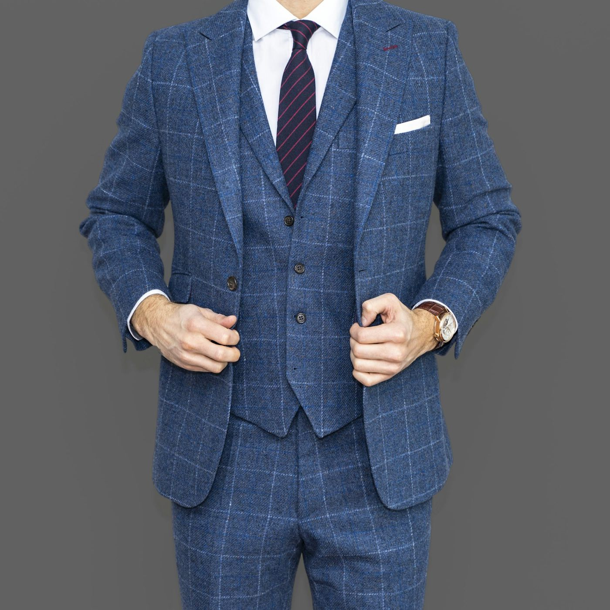

Home / Services
Suits · wedding · formal
From quick hems to full rebuilds.
Whatever the garment, it starts with a fitting and an honest look at what's possible.


Suits & tailoring
The suit you own, fitted like it's bespoke.
Jacket sleeves
Shortened or lengthened so a little shirt cuff shows.
CommonJacket waist & back
Taken in for shape without pulling across the buttons.
Fitting neededTrousers
Tapered, hemmed and waist adjusted to sit cleanly on the shoe.
Bring your shoesWedding party suits
Groom and groomsmen fitted together, ready for the day.
Book early
Wedding & formal
Layers, lace, beading and boning need patience.
Wedding dresses
Bodice, straps, bustles and hems through every layer — fitted in stages.
Fitted in stagesBridesmaid & formal dresses
Hems, side seams and straps for the whole bridal party.
Fitting neededEvening & occasion wear
Gowns and cocktail dresses prepared for the event.
Everyday
The smaller jobs, done with the same care.
Shirts
Tapered and sleeves shortened for a clean line.
Repairs & zips
Zips replaced, seams and linings repaired.
Example services — we'd confirm these with you.